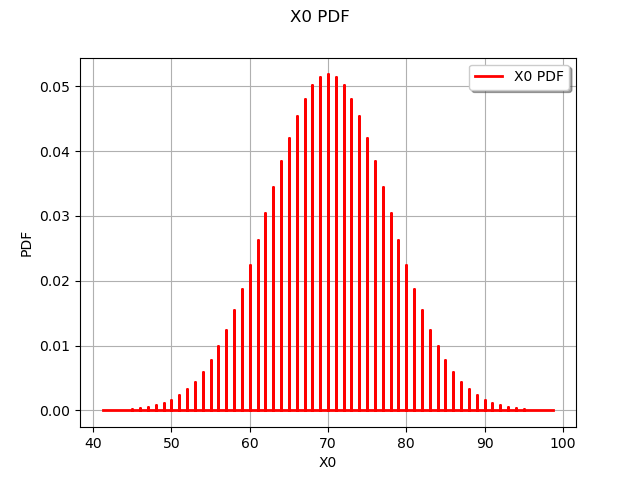
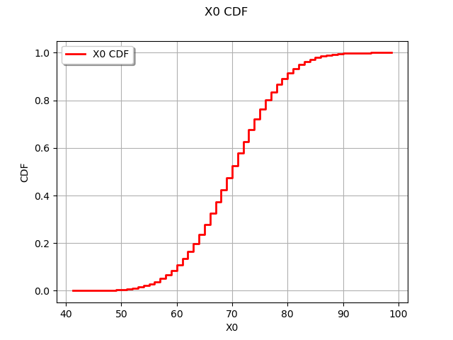

Note
Click here to download the full example code
Create a discrete random mixture¶
In this example we are going to build the distribution of the value of the sum of 20 dice rolls.
where
from __future__ import print_function
import openturns as ot
import openturns.viewer as viewer
from matplotlib import pylab as plt
ot.Log.Show(ot.Log.NONE)
create the distribution associated to the dice roll
X = ot.UserDefined([[i] for i in range(1,7)])
Roll the dice a few times
X.getSample(10)
| v0 | |
|---|---|
| 0 | 1 |
| 1 | 3 |
| 2 | 6 |
| 3 | 1 |
| 4 | 6 |
| 5 | 3 |
| 6 | 2 |
| 7 | 2 |
| 8 | 4 |
| 9 | 2 |
N = 20
Create the collection of identically distributed Xi
coll = [X] * N
Create the weights
weight = [1.0] * N
create the affine combination
distribution = ot.RandomMixture(coll, weight)
probability to exceed a sum of 100 after 20 dice rolls
distribution.computeComplementaryCDF(100)
Out:
1.576207331110968e-05
draw PDF
graph = distribution.drawPDF()
view = viewer.View(graph)

draw CDF
graph = distribution.drawCDF()
view = viewer.View(graph)
plt.show()

Total running time of the script: ( 0 minutes 0.163 seconds)